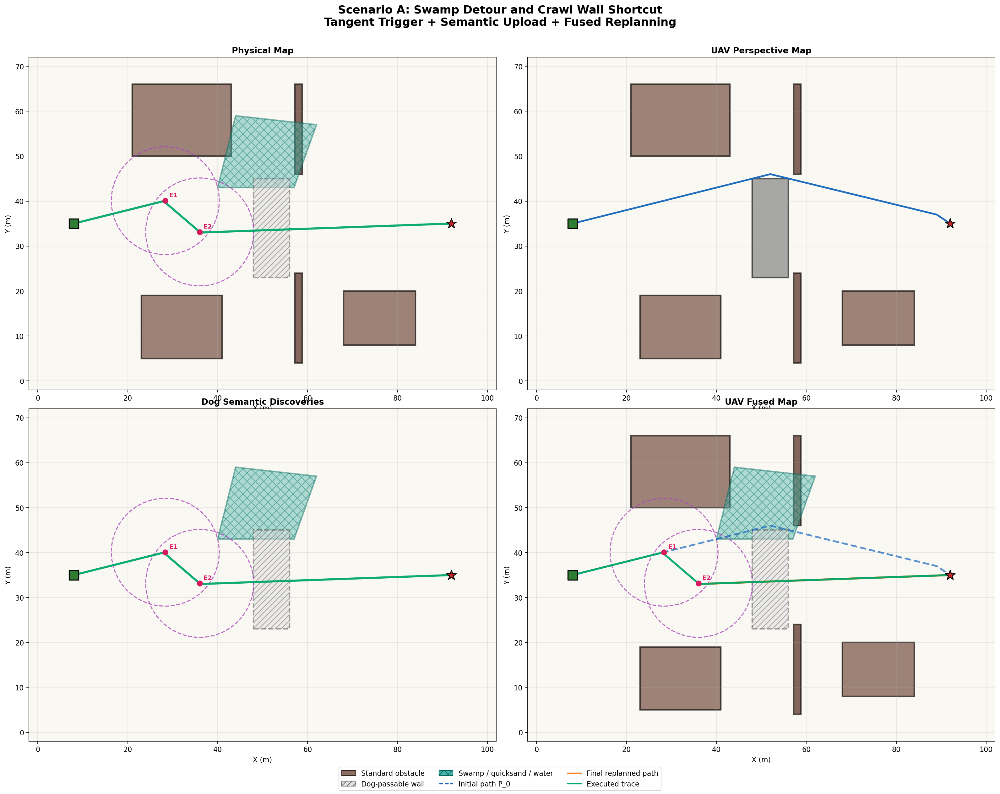
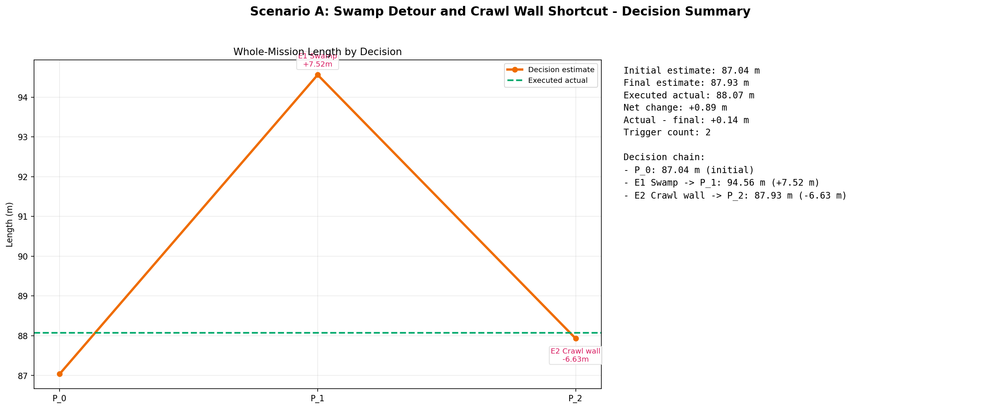
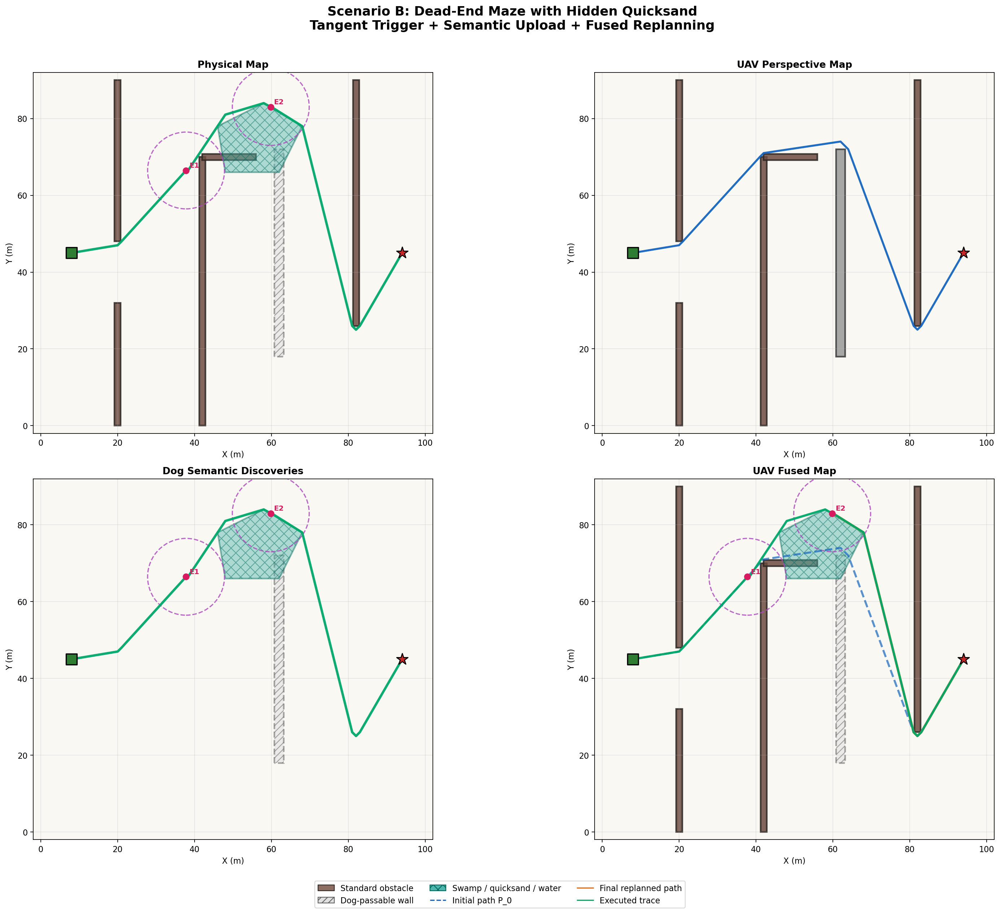
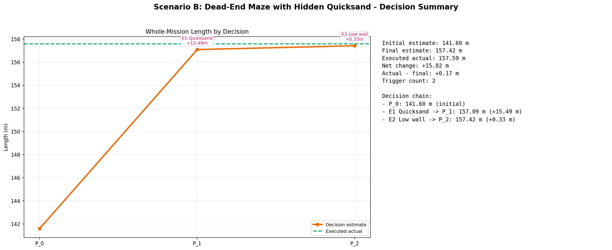
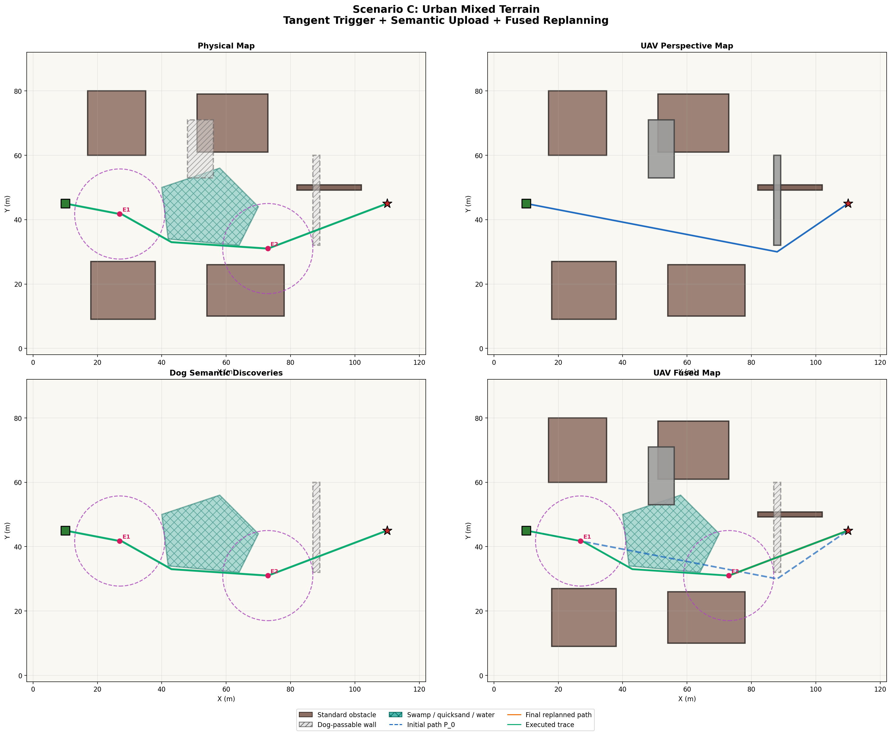
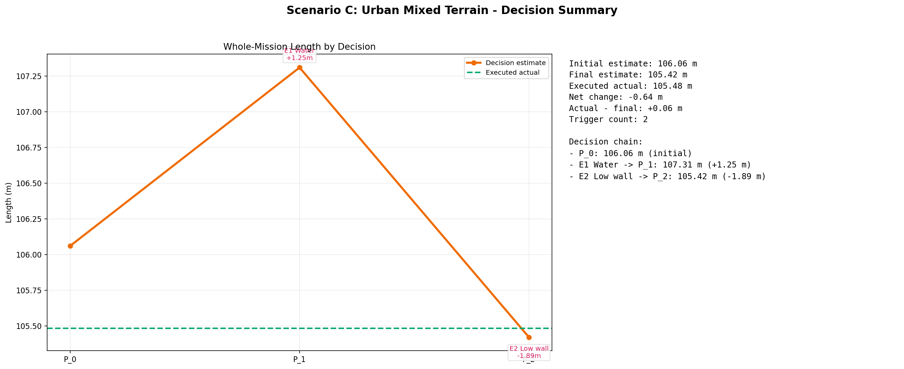
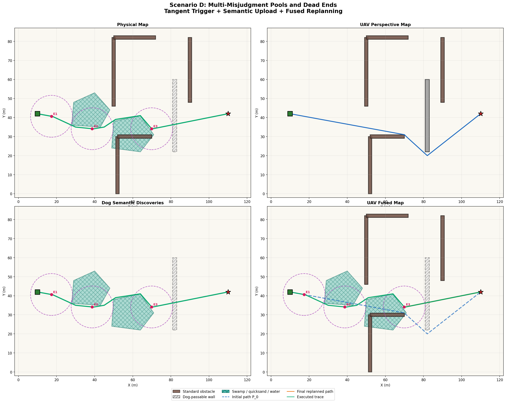
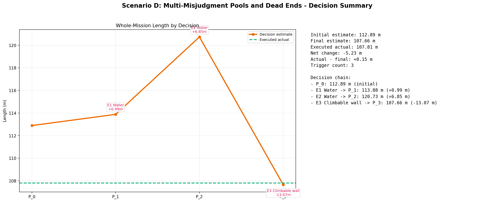

2026-03-14 UAV 精简汇报
UAV / 机器狗结果总览（3 页版）
仅展示结果，不展开背景。当前 4 个场景均已成功完成事件驱动语义纠偏与重规划；本周微架构部分暂无新材料。
4/4
场景成功
2.25
平均触发次数
+2.84m
平均路径差值
B
最大代价上升 +15.99m
D
最大收益 -5.08m
| 场景 | 触发 | 初始估计 | 最终决策 | 实际执行 | 差值 |
|---|---|---|---|---|---|
| A | 2 | 87.04 | 87.93 | 88.07 | +1.03m |
| B | 2 | 141.60 | 157.42 | 157.59 | +15.99m |
| C | 2 | 106.06 | 105.42 | 105.48 | -0.58m |
| D | 3 | 112.89 | 107.66 | 107.81 | -5.08m |
- 场景 B 说明：隐藏危险区会显著抬高执行代价。
- 场景 D 说明：语义修正还能发现更短路线。
- 因此本周 UAV 部分可以直接围绕“纠偏必要性 + 发现捷径能力”两点汇报。
默认策略：UAV 最多 3 页，只展示结果
分场景结果
场景 A / 场景 B
场景 A：沼泽绕行与矮墙捷径
UAV 初始将沼泽误判为普通地面，并将矮墙视作不可通过；机器狗先纠正沼泽语义，再发现可钻行矮墙捷径。


- 触发对象：沼泽、可钻行矮墙
- 关键数字：2 次；87.04m → 88.07m（+1.03m）
- 结论：纠偏后实际路径与最终决策估计基本一致，系统收敛稳定。
场景 B：死胡同迷宫与隐藏流沙
迷宫路径首先把 UAV 引向隐藏流沙走廊；纠偏后，机器狗改走替代路线，并在后续识别到可钻行矮墙。


- 触发对象：流沙、可钻行矮墙
- 关键数字：2 次；141.60m → 157.59m（+15.99m）
- 结论：隐藏危险区导致路径显著变长，事件触发式纠偏是必要的。
UAV 结果页
分场景结果
场景 C / 场景 D
场景 C：城市混合地形
城市障碍、水面和可钻行矮墙共同构成多次事件触发场景，用于验证连续语义纠偏与重规划。


- 触发对象：水面、可钻行矮墙
- 关键数字：2 次；106.06m → 105.48m（-0.58m）
- 结论：纠偏后实际路径与最终决策估计基本一致，系统收敛稳定。
场景 D：多重误判水池与死胡同
该场景包含多个隐藏水池和死胡同墙体，只有一个末端墙体真实可翻越，用于检验复杂决策下的连续纠偏能力。


- 触发对象：水面（pool_center_1）、水面（pool_lower_2）、可翻越墙体
- 关键数字：3 次；112.89m → 107.81m（-5.08m）
- 结论：语义修正不仅纠错，还发现了比初始估计更短的可行路线。
UAV 结果页